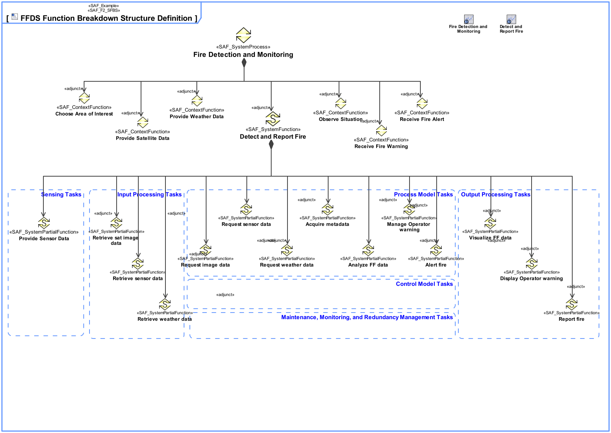
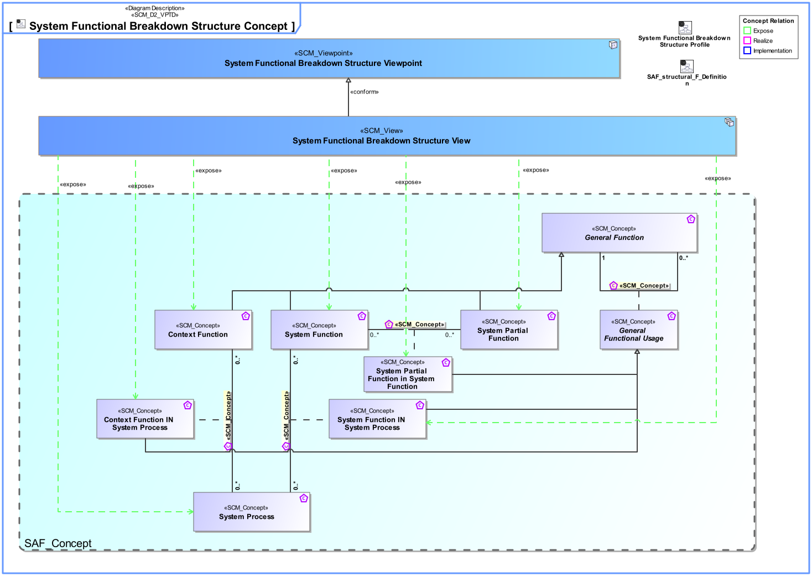
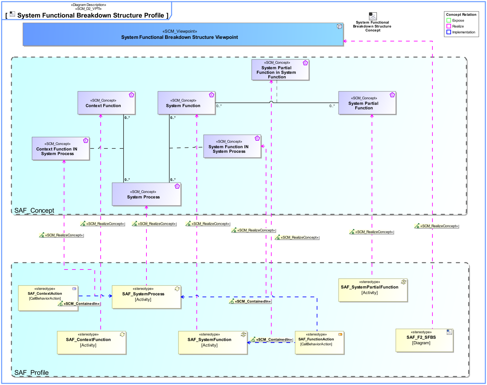

F2_SFBS System Functional Breakdown Structure Viewpoint
| Domain | Aspect | Maturity |
|---|---|---|
| Functional | Taxonomy & Structure |

The System Functional Breakdown Structure Viewpoint defines the structured, modular functional breakdown of the SOI beginning with System Processes, over identified System Functions further refined down to System Partial Functions. The reuse of System Functions, and System Partial Functions over Function Trees of the SOI is facilitated.
The System Functional Breakdown Structure Viewpoint supports the “System Requirements Definition Process” activities of the INCOSE SYSTEMS ENGINEERING HANDBOOK 2015 [§4.3] and contributes to the System Function Definition.
One or more more block definition diagrams (BDD) featuring activities representing System Processes, System Functions, System Partial Functions, and their aggregation composing the functional breakdown structure.
Tool specific analysis diagram featuring the relationships between System Processes, System Functions, and System Partial Functions.
The following Stereotypes / Model Elements are used in the Viewpoint:
The Diagram shows the concepts exposed by the viewpoint, and related concepts if necessary.

| Concept | Documentation |
|---|---|
| Context Function IN System Process | Specifies the fact that a Context Function is used in a System Process. |
| Context Function | Specifies the fact that a fundamental action or task is expected to be carried out by an External Entity. Note: The intention is to capture the expectations and to explicitly dissect the functionality. This must not be interpreted as an attempt for a behavior specification of an External Entity. Capturing this valuable information is the basis to reach agreement on the functionality at the System boundary by clarifying the expectations about what is performed by Context Elements. |
| System Function IN System Process | Specifies the fact that a System Function is used in a System Process. |
| System Function | Specifies the fundamental action or task that have to take place in the System in accepting and processing the inputs and in processing and generating the outputs. A System Function * accepts input from the System boundary * exposes its output at the System boundary * changes the System's State * is dependent on System's State Note: A System Function does not need to expose observable output, when it changes the System's state in a way that is observable by other system functions. Furthermore, a System Function does not need to accept any input from the system boundary, when it is dependent on the System State, which in turn is changeable by other System Functions. |
| System Partial Function in System Function | Specifies that a System Partial Function is used in a system function |
| System Partial Function | Specifies the fact that a System Partial Function is a decomposed part of a System Function and defines details of the System Function it belongs to. |
| System Process | Specifies the fact that a System Process captures system behavior as a specific sequence of actions or tasks, and system exchanges including information, materials, energy, etc. |
The Diagram shows the implementation of exposed concepts.
